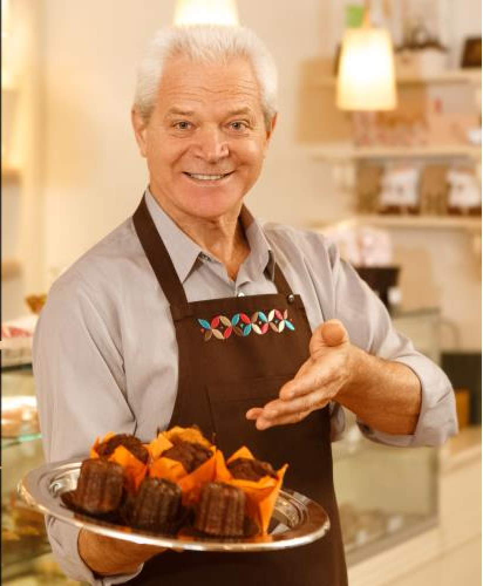

SOBRE NÓS

A padaria Saveur Pâtisserie veio de um amor por panificação e café, sempre buscamos o aprimoramento e refinamento nas nossas receitas e a inovação dos nossos produtos. No atendimento remoto ocasionado pela pandemia, tivemos perdas severas de clientes e não conseguimos nos manter, por isso hoje, visamos um novo método de divulgação para nossa empresa.